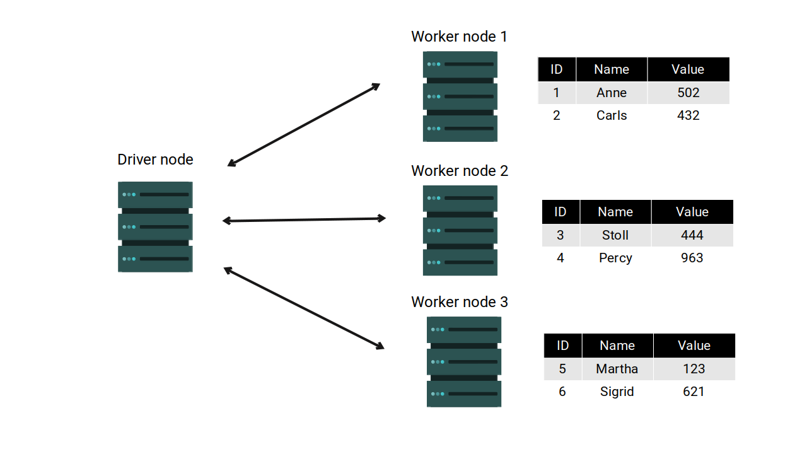
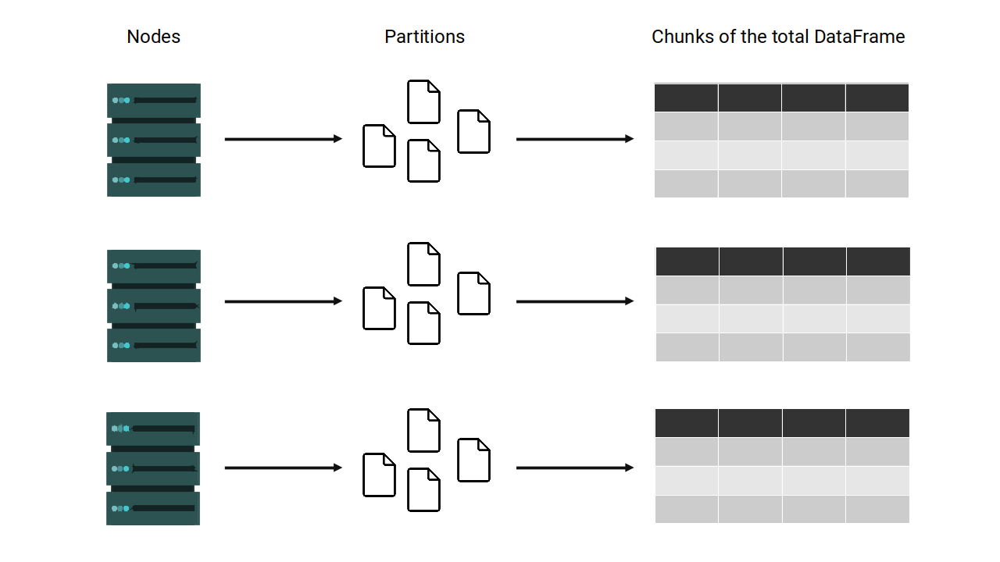

df5 = spark.range(5)
available_methods = dir(df5)
print(available_methods)3 Introducing Spark DataFrames
3.1 Introduction
In this chapter, you will understand how Spark represents and manages tables (or tabular data). Different programming languages and frameworks use different names to describe a table. But, in Apache Spark, they are referred as Spark DataFrames.
In pyspark, these DataFrames are stored inside python objects of class pyspark.sql.dataframe.DataFrame, and all the methods present in this class, are commonly referred as the DataFrame API of Spark. This is the most important API of Spark, because much of your Spark applications will heavily use this API to compose your data transformations and data flows (Chambers and Zaharia 2018).
3.2 Spark DataFrames versus Spark Datasets
Spark have two notions of structured data: DataFrames and Datasets. In summary, a Spark Dataset, is a distributed collection of data (Apache Spark Official Documentation 2022). In contrast, a Spark DataFrame is a Spark Dataset organized into named columns (Apache Spark Official Documentation 2022).
This means that, Spark DataFrames are very similar to tables as we know in relational databases - RDBMS, or, in spreadsheets (like Excel). So in a Spark DataFrame, each column has a name, and they all have the same number of rows. Furthermore, all the rows inside a column must store the same type of data, but each column can store a different type of data.
In the other hand, Spark Datasets are considered a collection of any type of data. So a Dataset might be a collection of unstructured data as well, like log files, JSON and XML trees, etc. Spark Datasets can be created and transformed trough the Dataset API of Spark. But this API is available only in Scala and Java API’s of Spark. For this reason, we do not act directly on Datasets with pyspark, only DataFrames. That’s ok, because for the most part of applications, we do want to use DataFrames, and not Datasets, to represent our data.
However, what makes a Spark DataFrame different from other dataframes? Like the pandas DataFrame? Or the R native data.frame structure? Is the distributed aspect of it. Spark DataFrames are based on Spark Datasets, and these Datasets are collections of data that are distributed across the cluster. As an example, lets suppose you have the following table stored as a Spark DataFrame:
| ID | Name | Value |
|---|---|---|
| 1 | Anne | 502 |
| 2 | Carls | 432 |
| 3 | Stoll | 444 |
| 4 | Percy | 963 |
| 5 | Martha | 123 |
| 6 | Sigrid | 621 |
If you are running Spark in a 4 nodes cluster (one is the driver node, and the other three are worker nodes). Each worker node of the cluster will store a section of this data. So you, as the programmer, will see, manage and transform this table as if it was a single and unified table. But behind the hoods, Spark will split this data and store it as many fragments across the Spark cluster. Figure 3.1 presents this notion in a visual manner.

3.3 Partitions of a Spark DataFrame
A Spark DataFrame is always broken into many small pieces, and, these pieces are always spread across the cluster of machines. Each one of these small pieces of the total data are considered a DataFrame partition.
For the most part, you do not manipulate these partitions manually or individually (Karau et al. 2015), because Spark automatically do this job for you.
As we exposed in Figure 3.1, each node of the cluster will hold a piece of the total DataFrame. If we translate this distribution into a “partition” distribution, this means that each node of the cluster can hold one or multiple partitions of the Spark DataFrame.
If we sum all partitions present in a node of the cluster, we get a chunk of the total DataFrame. The figure below demonstrates this notion:

If the Spark DataFrame is not big, each node of the cluster will probably store just a single partition of this DataFrame. In contrast, depending on the complexity and size of the DataFrame, Spark will split this DataFrame into more partitions that there are nodes in the cluster. In this case, each node of the cluster will hold more than 1 partition of the total DataFrame.
3.4 The DataFrame class in pyspark
In pyspark, every Spark DataFrame is stored inside a python object of class pyspark.sql.dataframe.DataFrame. Or more succintly, a object of class DataFrame.
Like any python class, the DataFrame class comes with multiple methods that are available for every object of this class. This means that you can use any of these methods in any Spark DataFrame that you create through pyspark.
As an example, in the code below I expose all the available methods from this DataFrame class. First, I create a Spark DataFrame with spark.range(5), and, store it in the object df5. After that, I use the dir() function to show all the methods that I can use through this df5 object:
['__class__', '__delattr__', '__dict__', '__dir__',
'__doc__', '__eq__', '__format__', '__ge__',
'__getattr__', '__getattribute__', '__getitem__', '__gt__',
'__hash__', '__init__', '__init_subclass__', '__le__',
'__lt__', '__module__', '__ne__', '__new__',
'__reduce__', '__reduce_ex__', '__repr__', '__setattr__',
'__sizeof__', '__str__', '__subclasshook__', '__weakref__',
'_collect_as_arrow', '_jcols', '_jdf', '_jmap',
'_joinAsOf', '_jseq', '_lazy_rdd', '_repr_html_',
'_sc', '_schema', '_session', '_sort_cols',
'_sql_ctx', '_support_repr_html', '_to_corrected_pandas_type', 'agg',
'alias', 'approxQuantile', 'cache', 'checkpoint',
'coalesce', 'colRegex', 'collect', 'columns',
'corr', 'count', 'cov', 'createGlobalTempView',
'createOrReplaceGlobalTempView', 'createOrReplaceTempView', 'createTempView', 'crossJoin',
'crosstab', 'cube', 'describe', 'distinct',
'drop', 'dropDuplicates', 'drop_duplicates', 'dropna',
'dtypes', 'exceptAll', 'explain', 'fillna',
'filter', 'first', 'foreach', 'foreachPartition',
'freqItems', 'groupBy', 'groupby', 'head',
'hint', 'inputFiles', 'intersect', 'intersectAll',
'isEmpty', 'isLocal', 'isStreaming', 'is_cached',
'join', 'limit', 'localCheckpoint', 'mapInArrow',
'mapInPandas', 'na', 'observe', 'orderBy',
'pandas_api', 'persist', 'printSchema', 'randomSplit',
'rdd', 'registerTempTable', 'repartition', 'repartitionByRange',
'replace', 'rollup', 'sameSemantics', 'sample',
'sampleBy', 'schema', 'select', 'selectExpr',
'semanticHash', 'show', 'sort', 'sortWithinPartitions',
'sparkSession', 'sql_ctx', 'stat', 'storageLevel',
'subtract', 'summary', 'tail', 'take',
'toDF', 'toJSON', 'toLocalIterator', 'toPandas',
'to_koalas', 'to_pandas_on_spark', 'transform', 'union',
'unionAll', 'unionByName', 'unpersist', 'where',
'withColumn', 'withColumnRenamed', 'withColumns', 'withMetadata',
'withWatermark', 'write', 'writeStream', 'writeTo'],
All the methods present in this DataFrame class, are commonly referred as the DataFrame API of Spark. This is the most important API of Spark. Much of your Spark applications will heavily use this API to compose your data transformations and data flows (Chambers and Zaharia 2018).
3.5 Building a Spark DataFrame
There are some different methods to create a Spark DataFrame. For example, because a DataFrame is basically a Dataset of rows, we can build a DataFrame from a collection of Row’s, through the createDataFrame() method from your Spark Session:
from pyspark.sql import SparkSession
spark = SparkSession.builder.getOrCreate()
from datetime import date
from pyspark.sql import Row
data = [
Row(id = 1, value = 28.3, date = date(2021,1,1)),
Row(id = 2, value = 15.8, date = date(2021,1,1)),
Row(id = 3, value = 20.1, date = date(2021,1,2)),
Row(id = 4, value = 12.6, date = date(2021,1,3))
]
df = spark.createDataFrame(data)Remember that a Spark DataFrame in python is a object of class pyspark.sql.dataframe.DataFrame as you can see below:
type(df)pyspark.sql.dataframe.DataFrameIf you try to see what is inside of this kind of object, you will get a small description of the columns present in the DataFrame as a result:
dfDataFrame[id: bigint, value: double, date: date]So, in the above example, we use the Row() constructor (from pyspark.sql module) to build 4 rows. The createDataFrame() method, stack these 4 rows together to form our new DataFrame df. The result is a Spark DataFrame with 4 rows and 3 columns (id, value and date).
But you can use different methods to create the same Spark DataFrame. As another example, with the code below, we are creating a DataFrame called students. To do this, we create two python lists (data and columns), then, deliver these lists to createDataFrame() method. Each element of data is a python tuple that represents a row in the students DataFrame. And each element of columns represent the name of a column present in this new DataFrame.
data = [
(12114, 'Anne', 21, 1.56, 8, 9, 10, 9, 'Economics', 'SC'),
(13007, 'Adrian', 23, 1.82, 6, 6, 8, 7, 'Economics', 'SC'),
(10045, 'George', 29, 1.77, 10, 9, 10, 7, 'Law', 'SC'),
(12459, 'Adeline', 26, 1.61, 8, 6, 7, 7, 'Law', 'SC'),
(10190, 'Mayla', 22, 1.67, 7, 7, 7, 9, 'Design', 'AR'),
(11552, 'Daniel', 24, 1.75, 9, 9, 10, 9, 'Design', 'AR')
]
columns = [
'StudentID', 'Name', 'Age', 'Height', 'Score1',
'Score2', 'Score3', 'Score4', 'Course', 'Department'
]
students = spark.createDataFrame(data, columns)
studentsDataFrame[StudentID: bigint, Name: string, Age: bigint, Height: double, Score1: bigint, Score2: bigint, Score3: bigint, Score4: bigint, Course: string, Department: string]You can also use a method that returns a DataFrame object by default. Examples are the table() and range() methods from your Spark Session, like we used in the Section 3.4, to create the df5 object.
Other examples are the methods used to read data and import it to pyspark. These methods are available in the spark.read module, like spark.read.csv() and spark.read.json(). These methods will be described in more depth in Chapter 6.
3.6 Viewing a Spark DataFrame
A key aspect of Spark is its laziness. In other words, for most operations, Spark will only check if your code is correct and if it makes sense. Spark will not actually run or execute the operations you are describing in your code, unless you explicit ask for it with a trigger operation, which is called an “action” (this kind of operation is described in Section 5.3).
You can notice this laziness in the output below:
studentsDataFrame[StudentID: bigint, Name: string, Age: bigint, Height: double, Score1: bigint, Score2: bigint, Score3: bigint, Score4: bigint, Course: string, Department: string]Because when we call for an object that stores a Spark DataFrame (like df and students), Spark will only calculate and print a summary of the structure of your Spark DataFrame, and not the DataFrame itself.
So how can we actually see our DataFrame? How can we visualize the rows and values that are stored inside of it? For this, we use the show() method. With this method, Spark will print the table as pure text, as you can see in the example below:
students.show()[Stage 0:> (0 + 1) / 1] +---------+-------+---+------+------+------+------+------+---------+----------+
|StudentID| Name|Age|Height|Score1|Score2|Score3|Score4| Course|Department|
+---------+-------+---+------+------+------+------+------+---------+----------+
| 12114| Anne| 21| 1.56| 8| 9| 10| 9|Economics| SC|
| 13007| Adrian| 23| 1.82| 6| 6| 8| 7|Economics| SC|
| 10045| George| 29| 1.77| 10| 9| 10| 7| Law| SC|
| 12459|Adeline| 26| 1.61| 8| 6| 7| 7| Law| SC|
| 10190| Mayla| 22| 1.67| 7| 7| 7| 9| Design| AR|
| 11552| Daniel| 24| 1.75| 9| 9| 10| 9| Design| AR|
+---------+-------+---+------+------+------+------+------+---------+----------+
By default, this method shows only the top rows of your DataFrame, but you can specify how much rows exactly you want to see, by using show(n), where n is the number of rows. For example, I can visualize only the first 2 rows of df like this:
df.show(2)+---+-----+----------+
| id|value| date|
+---+-----+----------+
| 1| 28.3|2021-01-01|
| 2| 15.8|2021-01-01|
+---+-----+----------+
only showing top 2 rows
3.7 Getting the name of the columns
If you need to, you can easily collect a python list with the column names present in your DataFrame, in the same way you would do in a pandas DataFrame. That is, by using the columns method of your DataFrame, like this:
students.columns['StudentID',
'Name',
'Age',
'Height',
'Score1',
'Score2',
'Score3',
'Score4',
'Course',
'Department']3.8 Spark Data Types
Each column of your Spark DataFrame is associated with a specific data type. Spark supports a large number of different data types. You can see the full list at the official documentation page1. For now, we will focus on the most used data types, which are listed below:
IntegerType: Represents 4-byte signed integer numbers. The range of numbers that it can represent is from -2147483648 to 2147483647.LongType: Represents 8-byte signed integer numbers. The range of numbers that it can represent is from -9223372036854775808 to 9223372036854775807.FloatType: Represents 4-byte single-precision floating point numbers.DoubleType: Represents 8-byte double-precision floating point numbers.StringType: Represents character string values.BooleanType: Represents boolean values (true or false).TimestampType: Represents datetime values, i.e. values that contains fields year, month, day, hour, minute, and second, with the session local time-zone. The timestamp value represents an absolute point in time.DateType: Represents date values, i.e. values that contains fields year, month and day, without a time-zone.
Besides these more “standard” data types, Spark supports two other complex types, which are ArrayType and MapType:
ArrayType(elementType, containsNull): Represents a sequence of elements with the type ofelementType.containsNullis used to indicate if elements in aArrayTypevalue can havenullvalues.MapType(keyType, valueType, valueContainsNull): Represents a set of key-value pairs. The data type of keys is described bykeyTypeand the data type of values is described byvalueType. For aMapTypevalue, keys are not allowed to havenullvalues.valueContainsNullis used to indicate if values of aMapTypevalue can havenullvalues.
Each one of these Spark data types have a corresponding python class in pyspark, which are stored in the pyspark.sql.types module. As a result, to access, lets say, type StryngType, we can do this:
from pyspark.sql.types import StringType
s = StringType()
print(s)StringType()3.9 The DataFrame Schema
The schema of a Spark DataFrame is the combination of column names and the data types associated with each of these columns. Schemas can be set explicitly by you (that is, you can tell Spark how the schema of your DataFrame should look like), or, they can be automatically defined by Spark while reading or creating your data.
You can get a succinct description of a DataFrame schema, by looking inside the object where this DataFrame is stored. For example, lets look again to the df DataFrame.
In the result below, we can see that df has three columns (id, value and date). By the description id: bigint, we know that id is a column of type bigint, which translates to the LongType() of Spark. Furthermore, by the descriptions value: double and date: date, we know too that the columns value and date are of type DoubleType() and DateType(), respectively.
dfDataFrame[id: bigint, value: double, date: date]You can also visualize a more complete report of the DataFrame schema by using the printSchema() method, like this:
df.printSchema()root
|-- id: long (nullable = true)
|-- value: double (nullable = true)
|-- date: date (nullable = true)
3.9.1 Accessing the DataFrame schema
So, by calling the object of your DataFrame (i.e. an object of class DataFrame) you can see a small description of the schema of this DataFrame. But, how can you access this schema programmatically? You do this, by using the schema method of your DataFrame, like in the example below:
df.schemaStructType([StructField('id', LongType(), True), StructField('value', DoubleType(), True), StructField('date', DateType(), True)])The result of the schema method, is a StructType() object, that contains some information about each column of your DataFrame. More specifically, a StructType() object is filled with multiple StructField() objects. Each StructField() object stores the name and the type of a column, and a boolean value (True or False) that indicates if this column can contain any null value inside of it.
You can use a for loop to iterate through this StructType() and get the information of each column separately.
schema = df.schema
for column in schema:
print(column)StructField('id', LongType(), True)
StructField('value', DoubleType(), True)
StructField('date', DateType(), True)You can access just the data type of each column by using the dataType method of each StructField() object.
for column in schema:
datatype = column.dataType
print(datatype)LongType()
DoubleType()
DateType()And you can do the same for column names and the boolean value (that indicates if the column can contain “null” values), by using the name and nullable methods, respectively.
# Accessing the name of each column
for column in schema:
print(column.name)id
value
date# Accessing the boolean value that indicates
# if the column can contain null values
for column in schema:
print(column.nullable)True
True
True3.9.2 Building a DataFrame schema
When Spark creates a new DataFrame, it will automatically guess which schema is appropriate for that DataFrame. In other words, Spark will try to guess which are the appropriate data types for each column. But, this is just a guess, and, sometimes, Spark go way off.
Because of that, in some cases, you have to tell Spark how exactly you want this DataFrame schema to be like. To do that, you need to build the DataFrame schema by yourself, with StructType() and StructField() constructors, alongside with the Spark data types (i.e. StringType(), DoubleType(), IntegerType(), …). Remember, all of these python classes come from the pyspark.sql.types module.
In the example below, the schema object represents the schema of the registers DataFrame. This DataFrame have three columns (ID, Date, Name) of types IntegerType, DateType and StringType, respectively. See below that I deliver this schema object that I built to spark.createDataFrame().
from pyspark.sql.types import StructType, StructField
from pyspark.sql.types import DateType, StringType, IntegerType
from datetime import date
data = [
(1, date(2022, 1, 1), 'Anne'),
(2, date(2022, 1, 3), 'Layla'),
(3, date(2022, 1, 15), 'Wick'),
(4, date(2022, 1, 11), 'Paul')
]
schema = StructType([
StructField('ID', IntegerType(), True),
StructField('Date', DateType(), True),
StructField('Name', StringType(), True)
])
registers = spark.createDataFrame(data, schema = schema)Having this example in mind, to build a DataFrame schema from scratch, you have to build the equivalent StructType() object that represents the schema you want.
3.9.3 Checking your DataFrame schema
In some cases, you need to include in your pyspark program, some checks that certifies that your Spark DataFrame have the expected schema. In other words, you want to take actions if your DataFrame have a different schema that might cause a problem in your program.
To check if a specific column of your DataFrame is associated with the data type \(x\), you have to use the DataFrame schema to check if the respective column is an “instance” of the python class that represents that data type \(x\). Lets use the df DataFrame as an example.
Suppose you wanted to check if the id column is of type IntegerType. To do this check, we use the python built-in function isinstance() with the python class that represents the Spark IntegerType data type. But, you can see in the result below, that the id column is not of type IntegerType.
from pyspark.sql.types import IntegerType
schema = df.schema
id_column = schema[0]
isinstance(id_column.dataType, IntegerType)FalseThis unexpected result happens, because the id column is actually from the “big integer” type, or, the LongType (which are 8-byte signed integer). You can see below, that now the test results in true:
from pyspark.sql.types import LongType
isinstance(id_column.dataType, LongType)TrueThe full list is available at the link https://spark.apache.org/docs/3.3.0/sql-ref-datatypes.html#supported-data-types↩︎